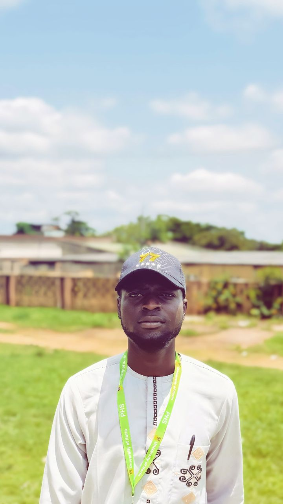

Case study slot
Sales Analytics
Designed for a future real-world project: cleaning, trend analysis, KPIs and recommendations.
I'm Mubarak Sulaiman Aminullah, a passionate learner and worker focused on data analysis, statistics, and turning information into useful insights.

My work sits at the intersection of statistics, data, learning, and practical problem-solving.
I am a Data Analyst and Statistics student at the University of Ilorin. I enjoy learning, working with data, asking better questions, and developing practical analytical skills that can support smarter decisions.
Current areas of focus and professional interests.
A small interactive demonstration is included so the portfolio feels like an analytics workspace.
This visualization uses illustrative values to demonstrate the analytical style of the portfolio. It is not presented as Mubarak's personal client data.
Designed for a future real-world project: cleaning, trend analysis, KPIs and recommendations.
A place to showcase segmentation, customer behavior and retention analysis.
A future project area for statistical modeling and machine-learning experiments.
Internship · Data / Technology environment
Practical exposure to a technology-focused work environment, contributing to professional growth and strengthening hands-on learning.
For collaborations, internships, analytics opportunities, or professional conversations.